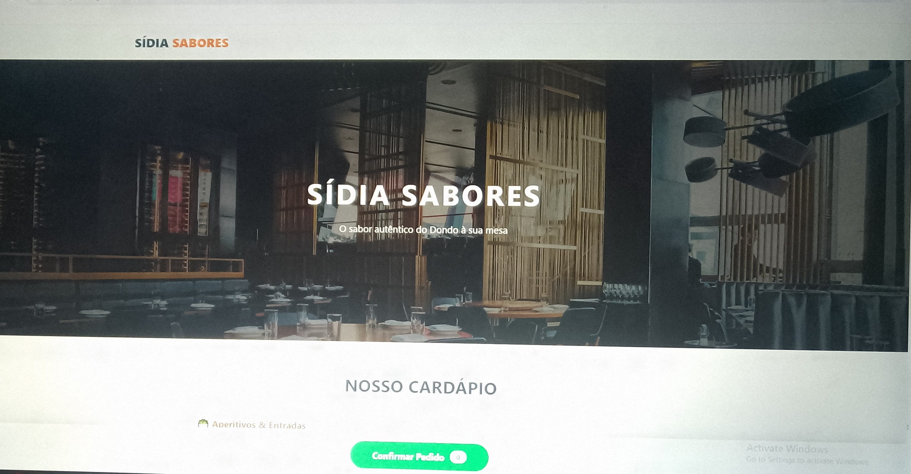
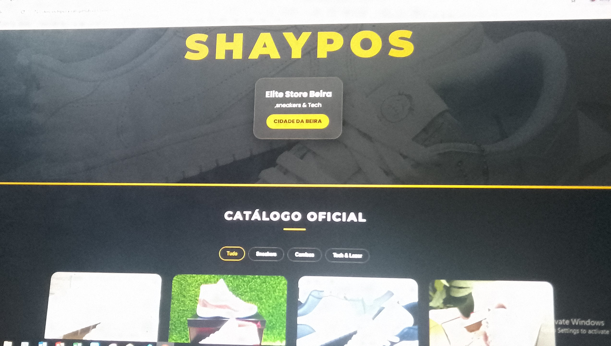
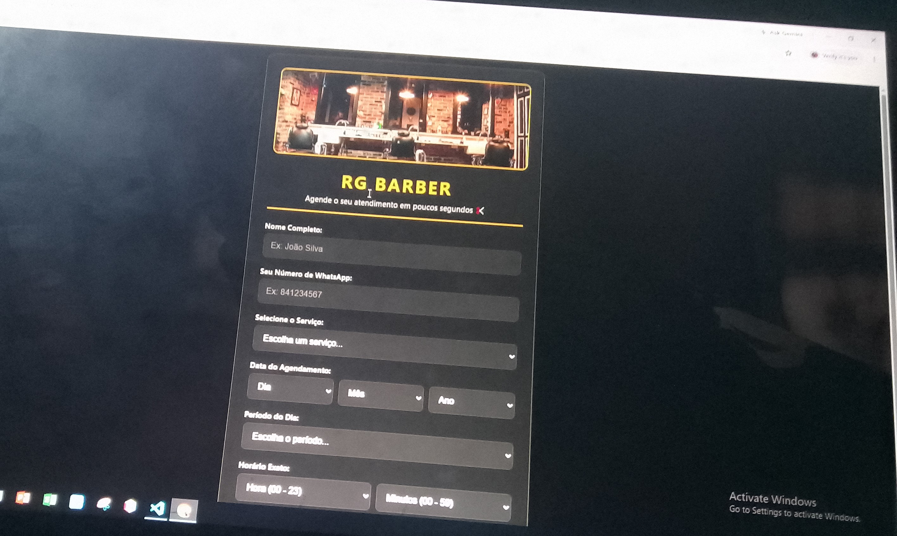

Site de restaurante
wibsite e menu digital deselvolvio com html e css3 puro para um restaurante.
Alguns projetos académicos e pessoais desenvolvidos até agora.

wibsite e menu digital deselvolvio com html e css3 puro para um restaurante.

Página em HTML e CSS puro para um pequeno negócio local, com secções de apresentação, serviços e contacto.

site para marcação diárias.